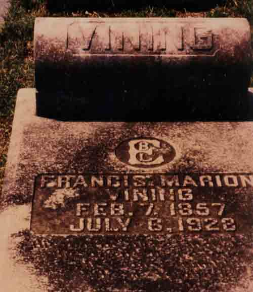
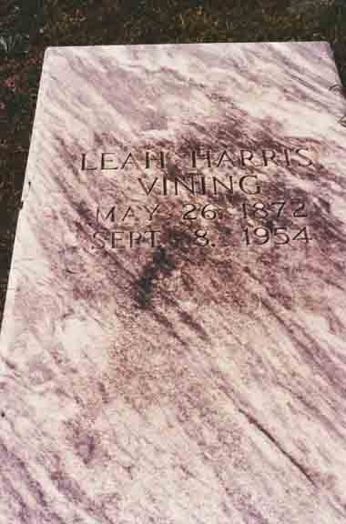
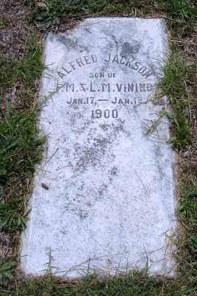
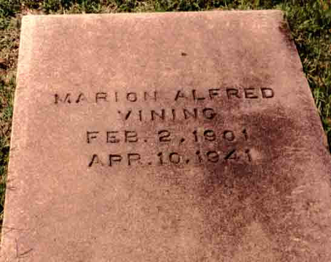

Census Data
| 1900 | 1910 | 1920 | 1930 | 1940 | |
| Francis Marion Vining | 43 | 53 | 63 | dead | |
| Mary Leah (Harris) Vining | 28 | 37 | [illegible] | 57 [see note below] |
68 [see note below] |
| James Myloe Vining | 9 | living in separate household | |||
| Myrtle E. Vining | 7 | 18 | [married?] and living in separate household | ||
| James Herbert Vining | 6 | 16 | [26?] | [living? in separate household] | |
| Susie Mae Vining | 4 | 14 | married and living in separate household | 33 [see note below] |
42 [see note below] |
| Minnie Jewell Vining | 2 | 12 | 21 | [married and?] living in separate household | |
| Alfred Jackson L. Vining | dead | ||||
| Alfred Marion Vining | 9 | 16 | [married and?] living in separate household | ||
| Marion Alfred Vining | 9 | 16 | living in separate household | ||
| Fannie J. Vining | 6 | 15 | [married and?] living in separate household | ||
| Jackson Vining | 2 | 12 | [married and?] living in separate household |


Death Data
Gravestones for Francis Marion Vining and Mary Leah (Harris) Vining, in Rose Hill Cemetery, Macon, Bibb County, Georgia (from Find A Grave):


